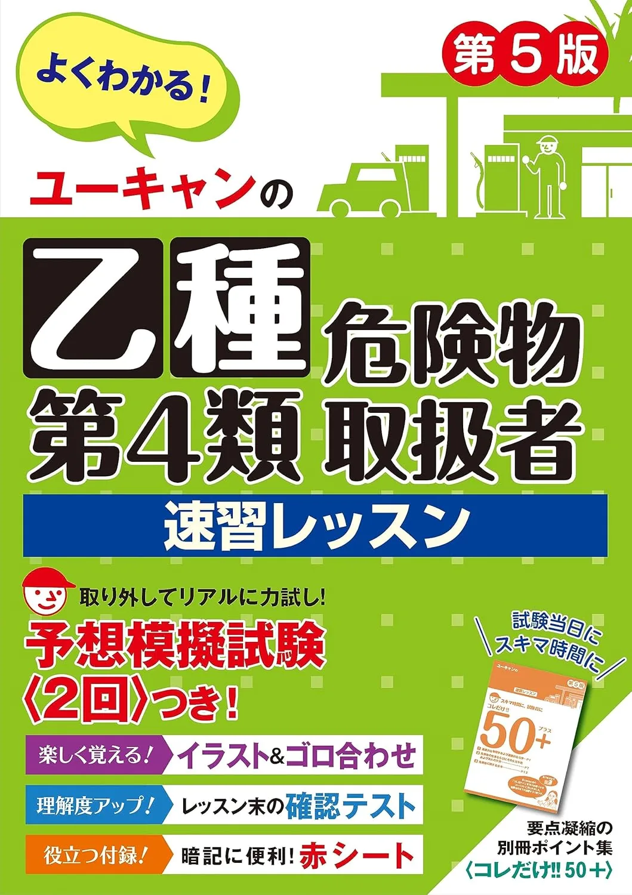
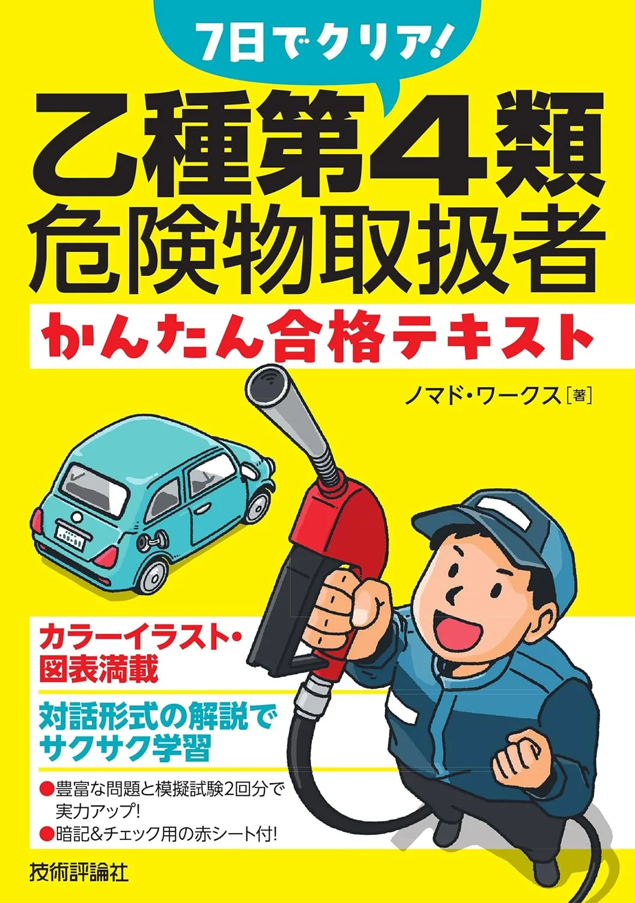

危険物乙4のおすすめテキスト3選【2026年度版·独学·三領域】
2026年度版テキスト3冊を、章立て·解説量·演習接続で比較します。筆記は四肢択一·50問·60分·三領域（法令·物性·火災予防）、35/50合格目安·受験手数料5,300円（要項で再確認）です。出題範囲は消防庁（公式）が正本。価格·在庫は購入前に各Amazonページでご確認ください。例えば6/11（木）·9/15（日）支部試験まで残り12週なら、6/14（日）3冊比較——6/17（水）1冊決定——7/1（火）50問35/50計測、が定番の流れです。
この記事の要点
本記事を読むと、2026年度版テキスト3冊の向き不向きが分かり、たとえば「TACスピード→平日30分×5＋土曜90分→8/1第1周→7/1 50問35/50計測」まで具体例付きで設計できます。
- 「乙種第4類 危険物取扱者 スピードテキスト 第4版」
- 「ユーキャンの乙種第4類危険物取扱者 速習レッスン 第5版」
- 「7日でクリア! 乙種第4類危険物取扱者 かんたん合格テキスト」
- テキスト選びの3つのポイント
- 過去問との併用
この記事の信頼性について
| 執筆 | 乙4マスター編集部（危険物取扱者試験（乙種第4類）の筆記試験に向けた学習設計・演習運用を専門とする編集チーム。法令・物性・火災予防の三領域を横断し、受験者が迷わない導線づくりを担当しています。） |
|---|---|
| 確認 | 公式情報確認担当（消防試験研究センター・消防庁の公開情報と照合し、出題傾向とサイト内リンクの整合を確認した担当者です。） |
| 事実確認日 | 2026-06-12 |
| 主な参照元 |
16/14：12週逆算で1冊を決める3点
テキスト選びは消防庁要項確認後の3点チェックから始めます。週8時間なら通勤30分×5＋土曜90分が現実的な配分です。
| 観点 | 確認内容 |
|---|---|
| 三領域 | 法令·物性·火災予防の目次 |
| 解説量 | 初学者か再受験かで厚み |
| 演習接続 | 同系統問題集へ進めるか |
例えば6/14（日）——要項出題範囲表——3冊目次突合——6/17（水）1冊決定——テキストの選び方記事比較基準——してください。
おすすめテキスト3選（比較）
価格・在庫・版情報は執筆時点（2026-06-04）のAmazon税込参考です。購入前に必ず販売ページでご確認ください。
| 順位 | 商品名 | 価格（税込参考） | ページ数 | 向いている人 |
|---|---|---|---|---|
| 1 | 乙種第4類 危険物取扱者 スピードテキスト 第4版 | ¥1,320 | 244 | TACシリーズでコンパクトに学び、問題集と縦串で進めたい人 |
| 2 | ユーキャンの乙種第4類危険物取扱者 速習レッスン 第5版 | ¥1,760 | 336 | イラスト中心で短時間学習したい初学者 |
| 3 | 7日でクリア! 乙種第4類危険物取扱者 かんたん合格テキスト | ¥1,760 | 288 | テキストと問題を1冊で回したいALL-in-one型 |

乙種第4類 危険物取扱者 スピードテキスト 第4版
- 乙4向けTAC定番のスピードテキスト
- スピード問題集（別記事）と章立ての相性がよい
- 短期学習・社会人独学の第一候補

ユーキャンの乙種第4類危険物取扱者 速習レッスン 第5版
- ユーキャン定番の速習テキスト
- 予想問題集（別記事）への接続がスムーズ
- 初学者・短期合格を目指す人向け

7日でクリア! 乙種第4類危険物取扱者 かんたん合格テキスト
- テキスト＆問題集一体型で手軽に始められる
- 超短期学習・復習用のコンパクト教材
- TAC/ユーキャンと比較して選びやすい
23冊タイプ別：週次時間の当て方
2026年度版3冊は週次の使い方が異なります。いずれも最新版を選び、中古は版を確認します。
| タイプ | 向く受験生 |
|---|---|
| TACスピード | コンパクト·問題集縦串 |
| ユーキャン速習 | イラスト·短時間 |
| 7日でクリア | ALL-in-one·超短期 |
たとえば週8時間なら、TACは平日30分×5＋土曜90分、ユーキャンはイラスト章+土曜演習60分、7日でクリアは平日45分×5で2か月1周——past-question-strategy50問計測——してください。
31位 TACスピード：問題集縦串ルーティン
乙種第4類 危険物取扱者スピードテキスト 第4版（TAC·244頁·Amazon税込参考1,320円）は、コンパクトに三領域を1冊で学べます。
| 強み | 弱み·注意 |
|---|---|
| スピード問題集と縦串◎ | 物性は演習量が必要 |
| 社会人独学の第一候補 | 他社問題集と章ズレ |
| 短期学習向き | 価格はAmazon要確認 |
例えば6/17（水）——法令第1章30分——土曜演習10問——8/1（金）第1周——7/1（火）50問35/50——おすすめ問題集3選問題集——してください。
42位 ユーキャン速習：イラスト30分ループ
「ユーキャンの乙種第4類危険物取扱者 速習レッスン 第5版」（336頁·Amazon税込参考1,760円）は、イラスト中心で初学者向きです。
| 強み | 弱み·注意 |
|---|---|
| 予想問題集へ接続◎ | ページ量に時間設計 |
| 短時間学習向き | TAC混在は分散 |
| 初学者·短期合格 | 価格はAmazon要確認 |
たとえば6/17（水）——物性イラスト章20分——火災予防5問——8/15（金）第1周——9/1（月）50問通し——pass-score35/50——してください。
3位は7日でクリア! かんたん合格テキスト（技評社·288頁·Amazon税込参考1,760円）。テキストと問題が1冊のALL-in-one型です。例えば6/17（水）——1日45分×7日で法令章1周——8/1（金）通し50問——再受験·超短期向き——してください。
5テキストの選び方記事との2列比較表
一般の参考書選びと本記事（Amazon3冊比較）は2記事で分担します。参考書選び記事は要項照合·1冊完走·テキスト先·問題集後、本記事はTAC·ユーキャン·7日でクリアの具体比較·週次配分·演習接続·Amazonリンクに特化します。
| 論点 | 参考書選び記事 | 本記事（3冊比較） |
|---|---|---|
| 焦点 | 選定基準 | 商品比較 |
| 成果物 | 1冊決定 | 3冊から1冊 |
| 時期 | 6/14 Day0 | 6/14〜6/17 |
| 出口 | 独学の始め方 | おすすめ問題集3選 |
例えば6/14（日）参考書選び——本記事3冊比較——6/17（水）1冊決定——独学の始め方——の順が定番です。3冊同時購入が典型ミスです。
6購入前チェックリスト
試験前日までに、消防庁（公式）の受験要項と受験票でおすすめ参考書・テキストの内容を最終確認し、忘れ物がないよう前日のうちに以下をチェックしてください。
- 受験票（印刷したもの、または要項で認められた表示方法）
- HB程度の黒い鉛筆を2本以上（予備含む。シャープペンシル可否は要項で確認）
- 消しゴム（汚れ・欠けがないもの）
- 受験票に「身分証明書持参」とある場合は、有効期限内の写真付き身分証
- 会場名・住所・最寄り駅・会場入口（受験票の案内どおり）
- 試験開始時刻と受付開始時刻（多くの会場は開始30分前までに着席）
- 当日の交通手段・所要時間・予備経路（遅延時の連絡先も控える）
- 腕時計の持込可否（禁止の場合は会場の時計のみ使用）
- スマートフォン・タブレット・参考書・電卓・ノート・辞書など禁止物品を持ち込まない
- 前日就寝時刻・当日の起床時刻・朝食（体調管理）
学習面では新しい教材を増やさず、直近1週間の誤答ノートと頻出用語だけを30分以内で見直します。当日朝は持ち物をリスト通りにカバンへ入れ、出発前にもう一度中身を確認してください。
7よくある質問
テキストは1冊だけで足りますか？
TACとユーキャン、どちらを選べばよいですか？
本記事と参考書選び記事の違いは？
記事の基本情報
| ジャンル | 独学対策 |
|---|---|
| タグ | 独学 / 参考書 |
公式情報の確認
公式情報の確認：危険物取扱者試験（乙種第4類）の最新情報は、消防庁（公式）などの公式情報を必ず確認してください。本人に割り当てられた試験会場は受験票の表記が正本です。